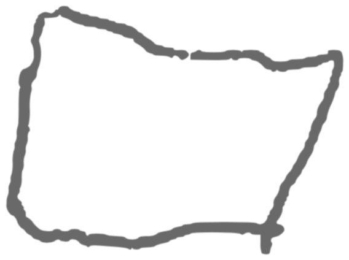

A man might have this picture of what seeing is: there is the seer and there is the thing seen. The one sees the other. A typical philosophical theory.
We wish to ask: what are we supposed to do with this picture?
A man might say: ‘I can’t see a thing’ and ‘I can’t see a thing but the fog.’ Both might be true.
‘I can’t see a thing in this fog.’ Which thing?
‘A man is looking for a thing in a fog. There is the man and there is the thing. That is the picture.’ Yes, but now try to picture the fog. What has become of the first picture?
A fog isn’t a something, but it isn’t a nothing either.
See this as a picture of a fog:
Now take the fog away.
‘Yes, but I can see better when there isn’t a fog.’ Is a fog, then, the absence of something?
‘A fog is what there is when the radio says ‘there is a fog’ and what the radio says is true!’ (A grammatical point).
‘The fog gets between me and what I want to see. The fog obscures the thing I want to see.’ And could there be another fog that gets between me and the first one? A mental fog? Obscuration has to stop somewhere.
‘I know there is a fog because I can’t see anything.’ (And how do you know you can’t see anything?)
‘A fog is what you can see when you can’t see anything else.’ This gives a use to the expression.
How should we determine when someone has mastered the use of the expression ‘fog’? Someone might say, for instance, ‘I am lost in the fog and can’t go on’. This would shew that he knows how to go on (in one sense of the expression.)
Think how we learn to use the word ‘fog’. A points to a thing which B cannot see. A says: ‘that is because of the fog’. (Similar language games: ‘because the lights are out,’ ‘because you’ve lost your glasses,’ ‘because your eyes are closed,’ because it isn’t there.’)
‘I cannot hear a thing in this fog.’ This, also, might have a use. A different language game.
A man decides to keep a diary. Whenever he cannot see what he is writing, he writes down ‘fog’. But here the thought that he is writing something down is mere shew. (A diary written entirely in invisible ink.)
Point to the fog. Now point away from it. Now brush your teeth. (Philosophy as a kind of activity).
How do you know there isn’t always a fog (only a transparent one?)
Whatever can be seen can be seen clearly; and wherein you cannot see, thereof you must be silent.